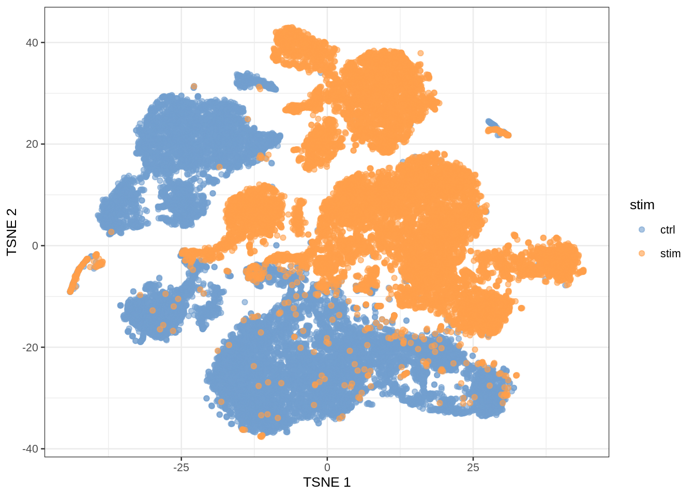
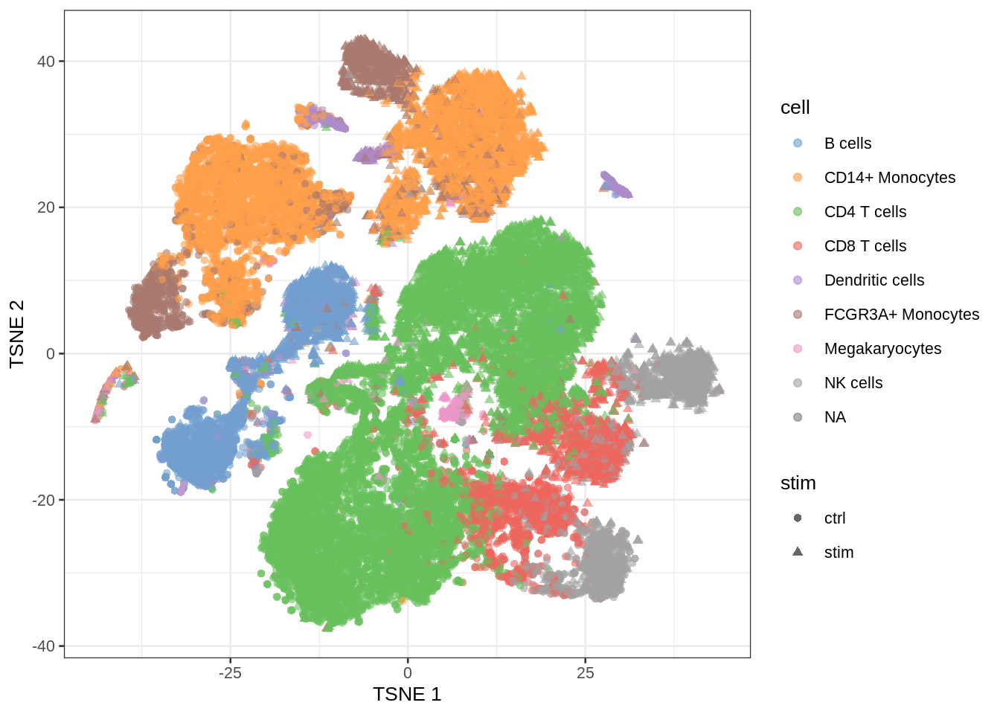
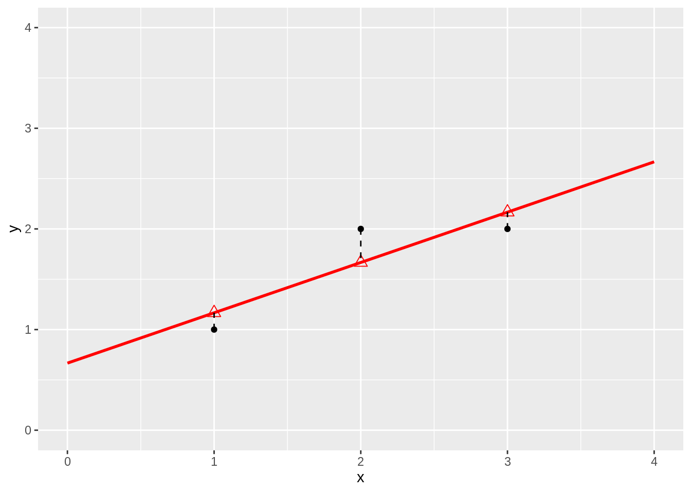
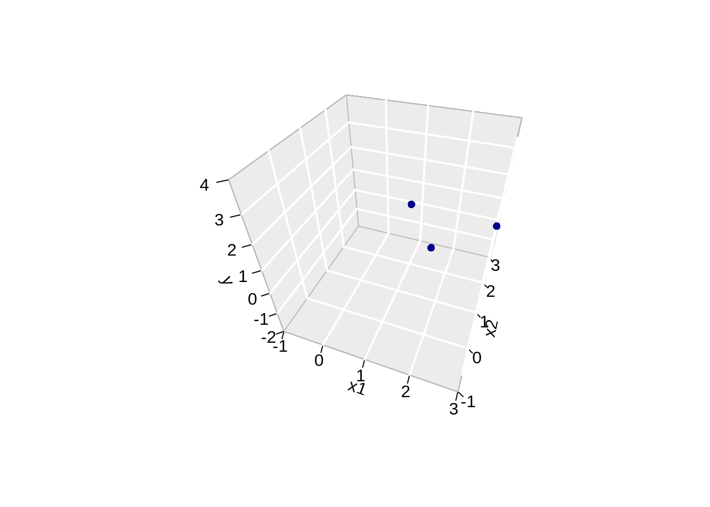
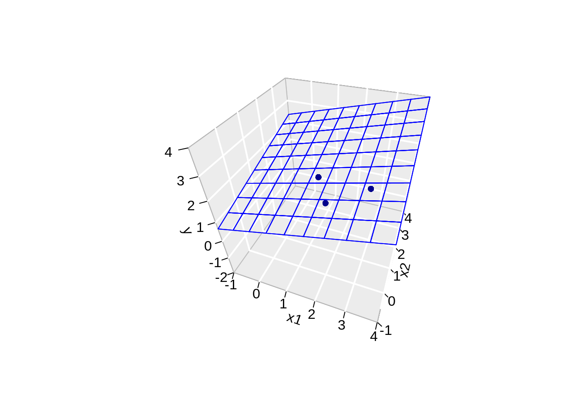

1. Introduction to High Dimensional Data Analysis
Lieven Clement
statOmics, Ghent University (https://statomics.github.io)
1 Introduction
- We live in a big data era
- Massive Datasets on our location, surfing behavior, consumer data, social media, …
- Life Sciences: advent of high throughput technologies has enabled us to measure brain activity (brain images) as well as the expression of thousands of genes, proteins, … for each subject or even single cell.
- Industry: process control with many sensors that follow process in real time…
- Data drive journalism
- …
Challenge: We have to learn from high dimensional data!
1.1 What are high dimensional data?
We typically observe multiple variables/features (p) for each subject/experimental unit \(i=1,\ldots,n\) i.e. \[ \mathbf{x}_i^T=[x_{i1},\ldots,x_{ip}]\]
Multivariate statistics have a long history, but were designed for the \(n>>>p\) case,
Nowadays many high throughput technologies generate multivariate data with many variables (large \(p\)) as compared to the number of independent replicates or samples (sample size \(n\)), resulting in {high-dimensional data}, which is characterised by \[ p >>> n. \]
New statistical methods for dealing with the \(p >>> n\) case have been developed in the last 20 years. Some of them are adaptations of multivariate methods.
Issues with high-dimensional data:
Computational problems: large matrices, numerical accuracy of computers become an issue
Classical asymptotic theory does not hold for \(p\rightarrow\infty\) as \(n \rightarrow \infty\)
Model (or feature) selection requires specialised methods to deal with the enormous number of possible models. (e.g. in linear regression with p potential predictors: \(2^p\) possible models)
Models that can potentially depend on large-p predictors are vulnerable to huge overfitting.
In searching for associations between an outcome and large p potential exploratory variables, we are at risk to make many false discoveries
The Curse of Dimensionality may cause a prediction model to become useless. (\(n\) data points become sparse in large-\(p\) dimensional space)
2 Important tasks in high dimensional data analysis?
2.1 Example: Kang et al. (2018)’s droplet-based scRNA-seq data of PBMCs cells from 8 lupus patients measured before and after 6h-treatment with INF-\(\beta\) (16 samples in total).
library(tidyverse)
## Packages to load and visualize the single-cell data
library(ExperimentHub)
library(scater)class: SingleCellExperiment
dim: 35635 29065
metadata(0):
assays(1): counts
rownames(35635): MIR1302-10 FAM138A ... MT-ND6 MT-CYB
rowData names(2): ENSEMBL SYMBOL
colnames(29065): AAACATACAATGCC-1 AAACATACATTTCC-1 ... TTTGCATGGTTTGG-1
TTTGCATGTCTTAC-1
colData names(5): ind stim cluster cell multiplets
reducedDimNames(1): TSNE
mainExpName: NULL
altExpNames(0):- Data on gene expression of 35635 genes of 29065 cells.
2.2 Data exploration and dimensionality reduction
- Visualisation is a first essential step to learn from data
11 x 12 sparse Matrix of class "dgCMatrix"
RP11-467L20.10 . . . . . . . . . . . .
MYRF . . . . . . . . . . . .
TMEM258 . . 3 . . . 1 1 . . . .
FEN1 . . . . . . . . . . . .
FADS2 . . . . . . . . . . . .
FADS1 . . . . . . . . . . . .
FADS3 . . . . . . . . . . . .
RAB3IL1 . . . . . . . . . . . .
BEST1 1 . . . . . 1 . . . 1 1
FTH1 163 8 271 4 5 174 38 58 31 3 663 612
AP003733.1 . . . . . . . . . . . .- It is impossible to learn about the structure in the data by staring at the data matrix.
- We should be able to explore the data in a low dimensional projection

- Note, that we see huge effect of treatment. If I see this I am always on my guard!
- We contacted the authors and learned that all control cells were sequenced in a first run and all stimulated cells were on a second sequencing run. So the large effect might be an effect of batch!
2.3 Prediction

In single cell analysis it is key to identify cell types in scRNA-seq data sets before in-depth investigations of their functional and pathological roles.
Use models that were build based on reference data sets to predict cell types in new data sets based on their gene expression pattern
Problem: we have 35635 genes at our disposal to build this prediction model!
Other examples
Prediction of risk on mortality is used on a daily basis in intensive care units to prioritise patient care.
Facebook: predict the identity of the faces of people that are on an new image that is uploaded.
Netflix: Suggest movies that you would like
2.4 Large scale hypothesis testing

- Which genes are differentially expressed between control and stimulated treatment (assess in each cell type)
- For which genes we see that the differential expression according to treatment is changing according to the cell type (interaction)
- We have to model the gene expression for each gene
\[ \left \{ \begin{array}{lcl} y_{ig} &\sim& NB(\mu_{ig}, \phi_{g})\\ E[y_{ig}] &=& \mu\\ \log(\mu_{ig}) &=& \eta_{ig}\\ \eta_{ig} &=& \beta_{0,g} + \sum\limits_{c=1}^C \beta_{c,g} X_{ic} + \beta_{s,g} X_{is} + \sum\limits_{c=1}^C \beta_{c:s,g} X_{ic} X_{is} + \alpha_{ig} \end{array} \right. \]
With
Cell type \(c=2\ldots C\) and \(X_{ic}\) is a dummy variable that \(X_{ic}=1\) if cell \(i\) is of cell type c and \(X_{ic}=0\) otherwise. Note that cell type \(c=1\) is the reference cell type
Indicator \(X_{is}\) indicates if cell \(i\) was stimulated \(X_{is}=1\) or not \(X_{is}=0\). So the control treatment is the reference treatment.
Suppose we want to test if the effect of the stimulus (average difference in expression between stimulated and non stimulated cells) is different in cell type c than in the reference cell type 1?
\(H_0: \beta_{c:s,g} = 0\)
\(H_1: \beta_{c:s,g} \neq 0\)
We have to assess this for 35635 genes!
If we assess each test at the 5% level we can expect 0.05 * 35635 = 1782 false positives.
\(\rightarrow\) massive multiple testing problem!
Note, that we cannot differentiate between batch and treatment because of the flaw in the experimental design!
Other examples
- Find regions (voxels) in the brain (on brain image) that are associated with a certain condition/treatment
- Evaluation of trading rules
3 Linear regression
- Linear regression is a very important statistical tool to study the association between variables and to build prediction models.
3.1 Data
Consider the following toy-dataset with 3 observation (X,Y):
3.2 Model
3.2.1 Scalar form
- Consider a vector of predictors \(\mathbf{x}=(x_1,\ldots,x_p)\) and
- a real-valued response \(Y\)
- then the linear regression model can be written as \[ Y=f(\mathbf{x}) +\epsilon=\beta_0+\sum\limits_{j=1}^p x_j\beta_j + \epsilon \] with i.i.d. \(\epsilon\sim N(0,\sigma^2)\)
- We will often work on mean centered variables: \(Y-\bar{Y}\) and \(X - \bar{X}\), then the intercept is dropped from the model: \[ Y=f(\mathbf{x}) +\epsilon=\sum\limits_{j=1}^p x_j\beta_j + \epsilon \]
3.2.2 Scalar model for the toy dataset
\[ y_i=\beta_0+\beta_1x + \epsilon_i \]
If we write the model for each observation:
\[ \begin{array} {lcl} 1 &=& \beta_0+\beta_1 1 + \epsilon_1 \\ 2 &=& \beta_0+\beta_1 2 + \epsilon_2 \\ 2 &=& \beta_0+\beta_1 2 + \epsilon_3 \\ \end{array} \]
3.2.3 Vector/Matrix form
- \(n\) observations \((\mathbf{x}_1,y_1) \ldots (\mathbf{x}_n,y_n)\) with \(\mathbf{x}_1^T=[1 x_1 \ldots x_p]\)
- Regression in matrix notation \[\mathbf{Y}=\mathbf{X\beta} + \mathbf{\epsilon}\] with \(\mathbf{Y}=\left[\begin{array}{c}y_1\\ \vdots\\y_n\end{array}\right]\), \(\mathbf{X}=\left[\begin{array}{cccc} 1&x_{11}&\ldots&x_{1p}\\ \vdots&\vdots&&\vdots\\ 1&x_{n1}&\ldots&x_{np} \end{array}\right]\) or \(\mathbf{X}=\left[\begin{array}{c} \mathbf{x}_1^T\\\vdots\\\mathbf{x}_n^T\end{array}\right]\), \(\boldsymbol{\beta}=\left[\begin{array}{c}\beta_0\\ \vdots\\ \beta_p\end{array}\right]\) and \(\mathbf{\epsilon}=\left[\begin{array}{c} \epsilon_1 \\ \vdots \\ \epsilon_n\end{array}\right]\)
Note, that upon centering of \(\mathbf{X}\) and \(\mathbf{Y}\) the 1 is dropped from each \(\mathbf{x}_i\) and thus the column of 1 is dropped in \(\mathbf{X}\)
3.2.4 Matrix form for toy dataset
We can also write this in matrix form
\[ \mathbf{Y} = \mathbf{X}\boldsymbol{\beta}+\boldsymbol{\epsilon} \]
with
\[ \mathbf{Y}=\left[ \begin{array}{c} 1\\ 2\\ 2\\ \end{array}\right], \quad \mathbf{X}= \left[ \begin{array}{cc} 1&1\\ 1&2\\ 1&3\\ \end{array} \right], \quad \boldsymbol{\beta} = \left[ \begin{array}{c} \beta_0\\ \beta_1\\ \end{array} \right] \quad \text{and} \quad \boldsymbol{\epsilon}= \left[ \begin{array}{c} \epsilon_1\\ \epsilon_2\\ \epsilon_3 \end{array} \right] \]
3.3 Interpretation
From the linear regression we get \[ E[Y \mid \mathbf{x}] = \mathbf{x}^T\boldsymbol{\beta} . \]
- Hence, the \(\beta\) parameters relate the regressor \(\mathbf{x}\) to the mean outcome.
- If we know the covariate pattern \(\mathbf{x}\) we can use the model to predict \(Y\).
For a model with a single regressor we obtain
\[ E[Y \mid x] = \beta_0 + \beta_1 x \] and \[ \beta_1 = E[Y\mid x+1] - E[Y\mid x] = \beta_0 + \beta_1 (x+1) - \beta_0 - \beta_1 x. \]
In this course we will typically center Y and X and then we get the following
\[ E[Y_c \mid x_c] = \beta_1 x_c \] and \[ \beta_1 = E[Y_c\mid x_c+1] - E[Y_c\mid x_c] . \]
Note, that the estimator for \(\beta_1\) will be exactly same when estimated based on the models with our without centering.
Hence, the \(\beta_1\) parameter has an interpretation as the mean increase of the outcome as the regressor increases with one unit. The parameter does not say very about individual outcomes. It is the residual variance \(\sigma^2\) that determines how much individual outcomes vary about the mean outcome.
The \(\beta\) parameters are used to measure association, but a \(\beta \neq 0\) does not necessarily mean that the model will give good predictions.
lm1 <- lm(y~x,data)
data$yhat <- lm1$fitted
data %>%
ggplot(aes(x,y)) +
geom_point() +
ylim(0,4) +
xlim(0,4) +
stat_smooth(method = "lm", color = "red", fullrange = TRUE) +
geom_point(aes(x=x, y =yhat), pch = 2, size = 3, color = "red") +
geom_segment(data = data, aes(x = x, xend = x, y = y, yend = yhat), lty = 2 )
In a later chapter we will discuss the problem of large scale hypothesis testing: testing many hypotheses in a single study (ten to hundred thousands of hypotheses).
A statistical test is constructed to control the type I error rate at the significance level. However, when many hypotheses are to be tested in a single study, the probability to find false associations is no longer controlled if p-values are compared to the significance level.
We will later introduce the concept of false discovery rates to overcome the problem.
3.4 Least Squares (LS)
Minimize the residual sum of squares \[\begin{eqnarray*} RSS(\boldsymbol{\beta})&=&\sum\limits_{i=1}^n e^2_i\\ &=&\sum\limits_{i=1}^n \left(y_i-\beta_0-\sum\limits_{j=1}^p x_{ij}\beta_j\right)^2 \end{eqnarray*}\]
or in matrix notation \[\begin{eqnarray*} RSS(\boldsymbol{\beta})&=&(\mathbf{Y}-\mathbf{X\beta})^T(\mathbf{Y}-\mathbf{X\beta})\\ &=&\Vert \mathbf{Y}-\mathbf{X\beta}\Vert^2_2 \end{eqnarray*}\] with the \(L_2\)-norm of a \(p\)-dim. vector \(v\) \(\Vert \mathbf{v} \Vert_2=\sqrt{v_1^2+\ldots+v_p^2}\) \(\rightarrow\) \(\hat{\boldsymbol{\beta}}=\text{argmin}_\beta \Vert \mathbf{Y}-\mathbf{X\beta}\Vert^2\)
3.4.1 Minimize RSS
\[ \begin{array}{ccc} \frac{\partial RSS}{\partial \boldsymbol{\beta}}&=&\mathbf{0}\\\\ \frac{(\mathbf{Y}-\mathbf{X\beta})^T(\mathbf{Y}-\mathbf{X}\boldsymbol{\beta})}{\partial \boldsymbol{\beta}}&=&\mathbf{0}\\\\ -2\mathbf{X}^T(\mathbf{Y}-\mathbf{X}\boldsymbol{\beta})&=&\mathbf{0}\\\\ \mathbf{X}^T\mathbf{X\beta}&=&\mathbf{X}^T\mathbf{Y}\\\\ \hat{\boldsymbol{\beta}}&=&(\mathbf{X}^T\mathbf{X})^{-1}\mathbf{X}^T\mathbf{Y} \end{array} \]
It can be shown that the estimator is unbiased:
\[ E[\hat{\boldsymbol{\beta}}]=\boldsymbol{\beta} \]
3.4.2 Projection
Fitted values:
\[ \begin{array}{lcl} \hat{\mathbf{Y}} &=& \mathbf{X}\hat{\boldsymbol{\beta}}\\ &=& \mathbf{X} (\mathbf{X}^T\mathbf{X})^{-1}\mathbf{X}^T\mathbf{Y}\\ &=& \mathbf{HY} \end{array} \] with \(\mathbf{H}\) the projection matrix also referred to as the hat matrix.
(Intercept) x
1 1 1
2 1 2
3 1 3
attr(,"assign")
[1] 0 1 (Intercept) x
(Intercept) 3 6
x 6 14 (Intercept) x
(Intercept) 2.333333 -1.0
x -1.000000 0.5 1 2 3
1 0.8333333 0.3333333 -0.1666667
2 0.3333333 0.3333333 0.3333333
3 -0.1666667 0.3333333 0.8333333 [,1]
1 1.166667
2 1.666667
3 2.166667We can also interpret the fit as the projection of the \(n\times 1\) vector \(\mathbf{Y}\) on the column space of the matrix \(\mathbf{X}\).
So each column in \(\mathbf{X}\) is also an \(n\times 1\) vector.
For the toy example n=3 and p=2. The other picture to linear regression is to consider \(X_0\), \(X_1\) and \(Y\) as vectors in the space of the data \(\mathbb{R}^n\), here \(\mathbb{R}^3\) because we have three data points. So the column space of X is a plane in the three dimensional space.
\[ \hat{\mathbf{Y}} = \mathbf{X} (\mathbf{X}^T\mathbf{X})^{-1} \mathbf{X}^T \mathbf{Y} \]
- Plane spanned by column space: The other picture to linear regression is to consider \(X_0\), \(X_1\) and \(Y\) as vectors in the space of the data \(\mathbb{R}^n\), here \(\mathbb{R}^3\) because we have three data points.
originRn <- data.frame(X1=0,X2=0,X3=0)
data$x0 <- 1
dataRn <- data.frame(t(data))
library(plotly)
p1 <- plot_ly(
originRn,
x = ~ X1,
y = ~ X2,
z= ~ X3, name="origin") %>%
add_markers(type="scatter3d") %>%
layout(
scene = list(
aspectmode="cube",
xaxis = list(range=c(-4,4)), yaxis = list(range=c(-4,4)), zaxis = list(range=c(-4,4))
)
)
p1 <- p1 %>%
add_trace(
x = c(0,1),
y = c(0,0),
z = c(0,0),
mode = "lines",
line = list(width = 5, color = "grey"),
type="scatter3d",
name = "obs1") %>%
add_trace(
x = c(0,0),
y = c(0,1),
z = c(0,0),
mode = "lines",
line = list(width = 5, color = "grey"),
type="scatter3d",
name = "obs2") %>%
add_trace(
x = c(0,0),
y = c(0,0),
z = c(0,1),
mode = "lines",
line = list(width = 5, color = "grey"),
type="scatter3d",
name = "obs3") %>%
add_trace(
x = c(0,1),
y = c(0,1),
z = c(0,1),
mode = "lines",
line = list(width = 5, color = "black"),
type="scatter3d",
name = "X1") %>%
add_trace(
x = c(0,1),
y = c(0,2),
z = c(0,3),
mode = "lines",
line = list(width = 5, color = "black"),
type="scatter3d",
name = "X2")
p1- Vector of Y:
Actual values of \(\mathbf{Y}\):
[1] 1 2 2\[ \mathbf{Y}=\left[\begin{array}{c} 1 \\ 2 \\ 2 \end{array}\right] \]
p2 <- p1 %>%
add_trace(
x = c(0,Y[1]),
y = c(0,Y[2]),
z = c(0,Y[3]),
mode = "lines",
line = list(width = 5, color = "red"),
type="scatter3d",
name = "Y")
p2- Projection of Y onto column space
Actual values of fitted values \(\mathbf{\hat{Y}}\):
[1] 1.166667 1.666667 2.166667\[ \mathbf{Y}=\left[\begin{array}{c} 1.1666667 \\ 1.6666667 \\ 2.1666667 \end{array}\right] \]
p2 <- p2 %>%
add_trace(
x = c(0,Yhat[1]),
y = c(0,Yhat[2]),
z = c(0,Yhat[3]),
mode = "lines",
line = list(width = 5, color = "orange"),
type="scatter3d",
name="Yhat") %>%
add_trace(
x = c(Y[1],Yhat[1]),
y = c(Y[2],Yhat[2]),
z = c(Y[3],Yhat[3]),
mode = "lines",
line = list(width = 5, color = "red", dash="dash"),
type="scatter3d",
name="Y -> Yhat"
)
p2\(\mathbf{Y}\) is projected in the column space of \(\mathbf{X}\)! spanned by the columns.
3.4.2.1 How does this projection works?
\[ \begin{array}{lcl} \hat{\mathbf{Y}} &=& \mathbf{X} (\mathbf{X}^T\mathbf{X})^{-1}\mathbf{X}^T\mathbf{Y}\\ &=& \mathbf{X}(\mathbf{X}^T\mathbf{X})^{-1/2}(\mathbf{X}^T\mathbf{X})^{-1/2}\mathbf{X}^T\mathbf{Y}\\ &=& \mathbf{U}\mathbf{U}^T\mathbf{Y} \end{array} \]
\(\mathbf{U}\) is a new orthonormal basis in \(\mathbb{R}^2\), a subspace of \(\mathbb{R}^3\)
The space spanned by U and X is the column space of X, e.g. it contains all possible linear combinantions of X. \(\mathbf{U}^t\mathbf{Y}\) is the projection of Y on this new orthonormal basis
eigenXtX <- eigen(XtX)
XtXinvSqrt <- eigenXtX$vectors %*%diag(1/eigenXtX$values^.5)%*%t(eigenXtX$vectors)
U <- X %*% XtXinvSqrt
p3 <- p1 %>%
add_trace(
x = c(0,U[1,1]),
y = c(0,U[2,1]),
z = c(0,U[3,1]),
mode = "lines",
line = list(width = 5, color = "blue"),
type="scatter3d",
name = "U1") %>%
add_trace(
x = c(0,U[1,2]),
y = c(0,U[2,2]),
z = c(0,U[3,2]),
mode = "lines",
line = list(width = 5, color = "blue"),
type="scatter3d",
name = "U2")
p3- \(\mathbf{U}^T\mathbf{Y}\) is the projection of \(\mathbf{Y}\) in the space spanned by \(\mathbf{U}\).
- Indeed \(\mathbf{U}_1^T\mathbf{Y}\)
p4 <- p3 %>%
add_trace(
x = c(0,Y[1]),
y = c(0,Y[2]),
z = c(0,Y[3]),
mode = "lines",
line = list(width = 5, color = "red"),
type="scatter3d",
name = "Y") %>%
add_trace(
x = c(0,U[1,1]*(U[,1]%*%Y)),
y = c(0,U[2,1]*(U[,1]%*%Y)),
z = c(0,U[3,1]*(U[,1]%*%Y)),
mode = "lines",
line = list(width = 5, color = "red",dash="dash"),
type="scatter3d",
name="Y -> U1") %>% add_trace(
x = c(Y[1],U[1,1]*(U[,1]%*%Y)),
y = c(Y[2],U[2,1]*(U[,1]%*%Y)),
z = c(Y[3],U[3,1]*(U[,1]%*%Y)),
mode = "lines",
line = list(width = 5, color = "red", dash="dash"),
type="scatter3d",
name="Y -> U1")
p4- and \(\mathbf{U}_2^T\mathbf{Y}\)
p5 <- p4 %>%
add_trace(
x = c(0,U[1,2]*(U[,2]%*%Y)),
y = c(0,U[2,2]*(U[,2]%*%Y)),
z = c(0,U[3,2]*(U[,2]%*%Y)),
mode = "lines",
line = list(width = 5, color = "red",dash="dash"),
type="scatter3d",
name="Y -> U2") %>% add_trace(
x = c(Y[1],U[1,2]*(U[,2]%*%Y)),
y = c(Y[2],U[2,2]*(U[,2]%*%Y)),
z = c(Y[3],U[3,2]*(U[,2]%*%Y)),
mode = "lines",
line = list(width = 5, color = "red", dash="dash"),
type="scatter3d",
name="Y -> U2")
p5- Yhat is the resulting vector that lies in the plane spanned by \(\mathbf{U}_1\) and \(\mathbf{U}_2\) and thus also in the column space of \(\mathbf{X}\).
p6 <- p5 %>%
add_trace(
x = c(0,Yhat[1]),
y = c(0,Yhat[2]),
z = c(0,Yhat[3]),
mode = "lines",
line = list(width = 5, color = "orange"),
type="scatter3d",
name = "Yhat") %>%
add_trace(
x = c(Y[1],Yhat[1]),
y = c(Y[2],Yhat[2]),
z = c(Y[3],Yhat[3]),
mode = "lines",
line = list(width = 5, color = "orange", dash="dash"),
type="scatter3d",
name = "Y -> U") %>%
add_trace(
x = c(U[1,1]*(U[,1]%*%Y),Yhat[1]),
y = c(U[2,1]*(U[,1]%*%Y),Yhat[2]),
z = c(U[3,1]*(U[,1]%*%Y),Yhat[3]),
mode = "lines",
line = list(width = 5, color = "orange", dash="dash"),
type="scatter3d",
name = "Y -> U") %>%
add_trace(
x = c(U[1,2]*(U[,2]%*%Y),Yhat[1]),
y = c(U[2,2]*(U[,2]%*%Y),Yhat[2]),
z = c(U[3,2]*(U[,2]%*%Y),Yhat[3]),
mode = "lines",
line = list(width = 5, color = "orange", dash="dash"),
type="scatter3d",
name = "Y -> U")
p63.4.3 Error
Note, that it is also clear from the equation in the derivation of the least squares solution that the residual is orthogonal on the column space:
\[ -2 \mathbf{X}^T(\mathbf{Y}-\mathbf{X}\boldsymbol{\beta}) = 0 \]
3.4.4 Curse of dimensionality?
Imagine what happens when p approaches n \(p=n\) or becomes much larger than p >> n!!!
Suppose that we add a predictor \(\mathbf{X}_2 = [2,0,1]^T\)?
\[ \mathbf{Y}=\left[ \begin{array}{c} 1\\ 2\\ 2\\ \end{array}\right], \quad \mathbf{X}= \left[ \begin{array}{ccc} 1&1&2\\ 1&2&0\\ 1&3&1\\ \end{array} \right], \quad \boldsymbol{\beta} = \left[ \begin{array}{c} \beta_0\\ \beta_1\\ \beta_2 \end{array} \right] \quad \text{and} \quad \boldsymbol{\epsilon}= \left[ \begin{array}{c} \epsilon_1\\ \epsilon_2\\ \epsilon_3 \end{array} \right] \]
data$x2 <- c(2,0,1)
fit <- lm(y~x+x2,data)
# predict values on regular xy grid
x1pred <- seq(-1, 4, length.out = 10)
x2pred <- seq(-1, 4, length.out = 10)
xy <- expand.grid(x = x1pred,
x2 = x2pred)
ypred <- matrix (nrow = 30, ncol = 30,
data = predict(fit, newdata = data.frame(xy)))
library(plot3D)
# fitted points for droplines to surface
th=20
ph=5
scatter3D(data$x,
data$x2,
Y,
pch = 16,
col="darkblue",
cex = 1,
theta = th,
ticktype = "detailed",
xlab = "x1",
ylab = "x2",
zlab = "y",
colvar=FALSE,
bty = "g",
xlim=c(-1,3),
ylim=c(-1,3),
zlim=c(-2,4))
z.pred3D <- outer(
x1pred,
x2pred,
function(x1,x2)
{
fit$coef[1] + fit$coef[2]*x1+fit$coef[2]*x2
})
x.pred3D <- outer(
x1pred,
x2pred,
function(x,y) x)
y.pred3D <- outer(
x1pred,
x2pred,
function(x,y) y)
scatter3D(data$x,
data$x2,
data$y,
pch = 16,
col="darkblue",
cex = 1,
theta = th,
ticktype = "detailed",
xlab = "x1",
ylab = "x2",
zlab = "y",
colvar=FALSE,
bty = "g",
xlim=c(-1,4),
ylim=c(-1,4),
zlim=c(-2,4))
surf3D(
x.pred3D,
y.pred3D,
z.pred3D,
col="blue",
facets=NA,
add=TRUE)
Note, that the linear regression is now a plane.
However, we obtain a perfect fit and all the data points are falling in the plane! 😱
This is obvious if we look at the column space of X!
X <- cbind(X,c(2,0,1))
XtX <- t(X)%*%X
eigenXtX <- eigen(XtX)
XtXinvSqrt <- eigenXtX$vectors %*%diag(1/eigenXtX$values^.5)%*%t(eigenXtX$vectors)
U <- X %*% XtXinvSqrt
p7 <- p1 %>%
add_trace(
x = c(0,2),
y = c(0,0),
z = c(0,1),
mode = "lines",
line = list(width = 5, color = "darkgreen"),
type="scatter3d",
name = "X3")
p7p8 <- p7 %>%
add_trace(
x = c(0,U[1,1]),
y = c(0,U[2,1]),
z = c(0,U[3,1]),
mode = "lines",
line = list(width = 5, color = "blue"),
type="scatter3d",
name = "U1") %>%
add_trace(
x = c(0,U[1,2]),
y = c(0,U[2,2]),
z = c(0,U[3,2]),
mode = "lines",
line = list(width = 5, color = "blue"),
type="scatter3d",
name = "U2") %>%
add_trace(
x = c(0,U[1,3]),
y = c(0,U[2,3]),
z = c(0,U[3,3]),
mode = "lines",
line = list(width = 5, color = "blue"),
type="scatter3d",
name = "U3")
p8The column space now spans the entire \(\mathbb{R}^3\)!
With the intercept and the two predictors we can thus fit every dataset that only has 3 observations for the predictors and the response.
So the model can no longer be used to generalise the patterns seen in the data towards the population (new observations).
Problem of overfitting!!!
If \(p >> n\) then the problem gets even worse! Then there is even no longer a unique solution to the least squares problem…
3.5 Variance Estimator?
\[ \begin{array}{ccl} \hat{\boldsymbol{\Sigma}}_{\hat{\boldsymbol{\beta}}} &=&\text{var}\left[(\mathbf{X}^T\mathbf{X})^{-1}\mathbf{X}^T\mathbf{Y}\right]\\\\ &=&(\mathbf{X}^T\mathbf{X})^{-1}\mathbf{X}^T\text{var}\left[\mathbf{Y}\right]\mathbf{X}(\mathbf{X}^T\mathbf{X})^{-1}\\\\ &=&(\mathbf{X}^T\mathbf{X})^{-1}\mathbf{X}^T(\mathbf{I}\sigma^2)\mathbf{X}(\mathbf{X}^T\mathbf{X})^{-1} \\\\ &=&(\mathbf{X}^T\mathbf{X})^{-1}\mathbf{X}^T\mathbf{I}\quad\mathbf{X}(\mathbf{X}^T\mathbf{X})^{-1}\sigma^2\\\\ %\hat{\boldmath{\Sigma}}_{\hat{\boldsymbol{\beta}}}&=&(\mathbf{X}^T\mathbf{X})^{-1}\mathbf{X}^T \text{var}\left[\mathbf{Y}\right](\mathbf{X}^T\mathbf{X})^{-1}\mathbf{X}\\ &=&(\mathbf{X}^T\mathbf{X})^{-1}\mathbf{X}^T\mathbf{X}(\mathbf{X}^T\mathbf{X})^{-1}\sigma^2\\\\ &=&(\mathbf{X}^T\mathbf{X})^{-1}\sigma^2 \end{array} \]
The fact that \(\hat{\boldsymbol{\beta}}\) is unbiased and has a variance of \((\mathbf{X}^T\mathbf{X})^{-1}\sigma^2\) will be important when assessing association!
3.6 Prediction error
Least squares estimators are unbiased and consistent, but these properties are not very important for prediction models.
A prediction model is considered good if it can predict well outcomes.
The prediction error for a prediction at predictor \(\mathbf{x}\) is given by
\[ \hat{Y}(\mathbf{x}) - Y^*, \]
where
\(\hat{Y}(\mathbf{x})=\mathbf{x}^T\hat{\boldsymbol{\beta}}\) is the prediction at \(\mathbf{x}\)
\(Y^*\) is an outcome at predictor \(\mathbf{x}\)
Since prediction is typically used to predict an outcome before it is observed, the outcome \(Y^*\) is not observed yet. Hence, the prediction error cannot be computed.
The problem of unobservable prediction errors is partly solved by the expected conditional test error (sometimes referred to as the mean squared error, MSE) \[ \text{Err}(\mathbf{x})=E[(\hat{Y}(\mathbf{x}) - Y^*)^2]. \]
With (suppressing the dependence on \(\mathbf{x}\)) \[ \mu = E[\hat{Y}] \text{ and } \mu^*=E[Y^*] \] the error can be expressed as \[\begin{eqnarray*} \text{Err} &=&E\left\{\left[(\hat{Y} -\mu)-(Y-\mu^*)-(\mu^*-\mu)\right]^2\right\} \\ &=& E[(\hat{Y} -\mu)^2]+E[(Y-\mu^*)^2]+E[(\mu^*-\mu)^2] \\ &=& \text{var}[\hat{Y}] +\text{var}[Y] +\text{bias}^2 \end{eqnarray*}\]
The term \(\text{var}[Y]\) (irreducible error) does not depend on the model and may therefore be ignored when \(\text{Err}\) is used for comparing prediction models.
In this introductory chapter we only aim to give a rough discussion on prediction errors. Later definitions will be refined and the notation will be more accurate. Also a more detailed discussion on the bias-variance trade-off will follow. For the moment it is sufficient to vaguely know that:
the expected conditional test error is introduced to circumvent the problem that the prediction error cannot be observed. In later chapters we will look at estimators of the expected error.
the expected conditional test error is in some literature also known as the mean squared error (MSE), but we do not adopt this terminology because MSE is also commonly used to refer to SSE divided by the residual degrees of freedom in a linear regression model.
The identity \(\text{Err}=\text{var}[\hat{Y}] +\text{var}[Y] +\text{bias}^2\) is known as the bias-variance trade-off. It shows that a good prediction model (i.e. a model resulting in a small Err), can be obtained by a model that shows a small bias as long as this bias is compensated with a large reduction of the variance or the predictions. A more detailed discussion will follow in later chapters.
For prediction models with a large number of predictors we will therefore introduce penalized regression. This will induce some bias in the estimation, but will allow us to reduce the variance considerably.
Session info
Session info
[1] "2022-01-28 17:48:43 UTC"─ Session info ───────────────────────────────────────────────────────────────
setting value
version R version 4.1.2 (2021-11-01)
os Ubuntu 20.04.3 LTS
system x86_64, linux-gnu
ui X11
language (EN)
collate C.UTF-8
ctype C.UTF-8
tz UTC
date 2022-01-28
pandoc 2.7.3 @ /usr/bin/ (via rmarkdown)
─ Packages ───────────────────────────────────────────────────────────────────
! package * version date (UTC) lib source
P AnnotationDbi 1.56.2 2021-11-09 [?] Bioconductor
P AnnotationHub * 3.2.1 2022-01-23 [?] Bioconductor
P assertthat 0.2.1 2019-03-21 [?] CRAN (R 4.1.2)
P backports 1.4.1 2021-12-13 [?] CRAN (R 4.1.2)
P beachmat 2.10.0 2021-10-26 [?] Bioconductor
P beeswarm 0.4.0 2021-06-01 [?] CRAN (R 4.1.2)
P Biobase * 2.54.0 2021-10-26 [?] Bioconductor
P BiocFileCache * 2.2.1 2022-01-23 [?] Bioconductor
P BiocGenerics * 0.40.0 2021-10-26 [?] Bioconductor
P BiocManager 1.30.16 2021-06-15 [?] CRAN (R 4.1.2)
P BiocNeighbors 1.12.0 2021-10-26 [?] Bioconductor
P BiocParallel 1.28.3 2021-12-09 [?] Bioconductor
P BiocSingular 1.10.0 2021-10-26 [?] Bioconductor
P BiocVersion 3.14.0 2021-05-19 [?] Bioconductor
P Biostrings 2.62.0 2021-10-26 [?] Bioconductor
P bit 4.0.4 2020-08-04 [?] CRAN (R 4.1.2)
P bit64 4.0.5 2020-08-30 [?] CRAN (R 4.1.2)
P bitops 1.0-7 2021-04-24 [?] CRAN (R 4.1.2)
P blob 1.2.2 2021-07-23 [?] CRAN (R 4.1.2)
P broom 0.7.11 2022-01-03 [?] CRAN (R 4.1.2)
P bslib 0.3.1 2021-10-06 [?] CRAN (R 4.1.2)
P cachem 1.0.6 2021-08-19 [?] CRAN (R 4.1.2)
P cellranger 1.1.0 2016-07-27 [?] CRAN (R 4.1.2)
P cli 3.1.1 2022-01-20 [?] CRAN (R 4.1.2)
P colorspace 2.0-2 2021-06-24 [?] CRAN (R 4.1.2)
P crayon 1.4.2 2021-10-29 [?] CRAN (R 4.1.2)
P crosstalk 1.2.0 2021-11-04 [?] CRAN (R 4.1.2)
P curl 4.3.2 2021-06-23 [?] CRAN (R 4.1.2)
P data.table 1.14.2 2021-09-27 [?] CRAN (R 4.1.2)
P DBI 1.1.2 2021-12-20 [?] CRAN (R 4.1.2)
P dbplyr * 2.1.1 2021-04-06 [?] CRAN (R 4.1.2)
P DelayedArray 0.20.0 2021-10-26 [?] Bioconductor
P DelayedMatrixStats 1.16.0 2021-10-26 [?] Bioconductor
P digest 0.6.29 2021-12-01 [?] CRAN (R 4.1.2)
P dplyr * 1.0.7 2021-06-18 [?] CRAN (R 4.1.2)
P ellipsis 0.3.2 2021-04-29 [?] CRAN (R 4.1.2)
P emo 0.0.0.9000 2022-01-28 [?] Github (hadley/emo@3f03b11)
P evaluate 0.14 2019-05-28 [?] CRAN (R 4.1.2)
P ExperimentHub * 2.2.1 2022-01-23 [?] Bioconductor
P fansi 1.0.2 2022-01-14 [?] CRAN (R 4.1.2)
P farver 2.1.0 2021-02-28 [?] CRAN (R 4.1.2)
P fastmap 1.1.0 2021-01-25 [?] CRAN (R 4.1.2)
P filelock 1.0.2 2018-10-05 [?] CRAN (R 4.1.2)
P forcats * 0.5.1 2021-01-27 [?] CRAN (R 4.1.2)
P fs 1.5.2 2021-12-08 [?] CRAN (R 4.1.2)
P generics 0.1.1 2021-10-25 [?] CRAN (R 4.1.2)
P GenomeInfoDb * 1.30.0 2021-10-26 [?] Bioconductor
P GenomeInfoDbData 1.2.7 2022-01-28 [?] Bioconductor
P GenomicRanges * 1.46.1 2021-11-18 [?] Bioconductor
P ggbeeswarm 0.6.0 2017-08-07 [?] CRAN (R 4.1.2)
P ggplot2 * 3.3.5 2021-06-25 [?] CRAN (R 4.1.2)
P ggrepel 0.9.1 2021-01-15 [?] CRAN (R 4.1.2)
P glue 1.6.1 2022-01-22 [?] CRAN (R 4.1.2)
P gridExtra 2.3 2017-09-09 [?] CRAN (R 4.1.2)
P gtable 0.3.0 2019-03-25 [?] CRAN (R 4.1.2)
P haven 2.4.3 2021-08-04 [?] CRAN (R 4.1.2)
P highr 0.9 2021-04-16 [?] CRAN (R 4.1.2)
P hms 1.1.1 2021-09-26 [?] CRAN (R 4.1.2)
P htmltools 0.5.2 2021-08-25 [?] CRAN (R 4.1.2)
P htmlwidgets 1.5.4 2021-09-08 [?] CRAN (R 4.1.2)
P httpuv 1.6.5 2022-01-05 [?] CRAN (R 4.1.2)
P httr 1.4.2 2020-07-20 [?] CRAN (R 4.1.2)
P interactiveDisplayBase 1.32.0 2021-10-26 [?] Bioconductor
P IRanges * 2.28.0 2021-10-26 [?] Bioconductor
P irlba 2.3.5 2021-12-06 [?] CRAN (R 4.1.2)
P jquerylib 0.1.4 2021-04-26 [?] CRAN (R 4.1.2)
P jsonlite 1.7.3 2022-01-17 [?] CRAN (R 4.1.2)
P KEGGREST 1.34.0 2021-10-26 [?] Bioconductor
P knitr 1.37 2021-12-16 [?] CRAN (R 4.1.2)
P labeling 0.4.2 2020-10-20 [?] CRAN (R 4.1.2)
P later 1.3.0 2021-08-18 [?] CRAN (R 4.1.2)
lattice 0.20-45 2021-09-22 [2] CRAN (R 4.1.2)
P lazyeval 0.2.2 2019-03-15 [?] CRAN (R 4.1.2)
P lifecycle 1.0.1 2021-09-24 [?] CRAN (R 4.1.2)
P lubridate 1.8.0 2021-10-07 [?] CRAN (R 4.1.2)
P magrittr 2.0.2 2022-01-26 [?] CRAN (R 4.1.2)
P Matrix 1.4-0 2021-12-08 [?] CRAN (R 4.1.2)
P MatrixGenerics * 1.6.0 2021-10-26 [?] Bioconductor
P matrixStats * 0.61.0 2021-09-17 [?] CRAN (R 4.1.2)
P memoise 2.0.1 2021-11-26 [?] CRAN (R 4.1.2)
mgcv 1.8-38 2021-10-06 [2] CRAN (R 4.1.2)
P mime 0.12 2021-09-28 [?] CRAN (R 4.1.2)
P misc3d 0.9-1 2021-10-07 [?] CRAN (R 4.1.2)
P modelr 0.1.8 2020-05-19 [?] CRAN (R 4.1.2)
P munsell 0.5.0 2018-06-12 [?] CRAN (R 4.1.2)
muscData * 1.8.0 2021-10-30 [1] Bioconductor
P nlme 3.1-155 2022-01-13 [?] CRAN (R 4.1.2)
P pillar 1.6.5 2022-01-25 [?] CRAN (R 4.1.2)
P pkgconfig 2.0.3 2022-01-28 [?] Github (r-lib/pkgconfig@b81ae03)
P plot3D * 1.4 2021-05-22 [?] CRAN (R 4.1.2)
P plotly * 4.10.0 2021-10-09 [?] CRAN (R 4.1.2)
P png 0.1-7 2013-12-03 [?] CRAN (R 4.1.2)
P promises 1.2.0.1 2021-02-11 [?] CRAN (R 4.1.2)
P purrr * 0.3.4 2020-04-17 [?] CRAN (R 4.1.2)
P R6 2.5.1 2021-08-19 [?] CRAN (R 4.1.2)
P rappdirs 0.3.3 2021-01-31 [?] CRAN (R 4.1.2)
P Rcpp 1.0.8 2022-01-13 [?] CRAN (R 4.1.2)
P RCurl 1.98-1.5 2021-09-17 [?] CRAN (R 4.1.2)
P readr * 2.1.1 2021-11-30 [?] CRAN (R 4.1.2)
P readxl 1.3.1 2019-03-13 [?] CRAN (R 4.1.2)
P renv 0.15.2 2022-01-24 [?] CRAN (R 4.1.2)
P reprex 2.0.1 2021-08-05 [?] CRAN (R 4.1.2)
P rlang 1.0.0 2022-01-26 [?] CRAN (R 4.1.2)
P rmarkdown 2.11 2021-09-14 [?] CRAN (R 4.1.2)
P RSQLite 2.2.9 2021-12-06 [?] CRAN (R 4.1.2)
P rstudioapi 0.13 2020-11-12 [?] CRAN (R 4.1.2)
P rsvd 1.0.5 2021-04-16 [?] CRAN (R 4.1.2)
P rvest 1.0.2 2021-10-16 [?] CRAN (R 4.1.2)
P S4Vectors * 0.32.3 2021-11-21 [?] Bioconductor
P sass 0.4.0 2021-05-12 [?] CRAN (R 4.1.2)
P ScaledMatrix 1.2.0 2021-10-26 [?] Bioconductor
P scales 1.1.1 2020-05-11 [?] CRAN (R 4.1.2)
P scater * 1.22.0 2021-10-26 [?] Bioconductor
P scuttle * 1.4.0 2021-10-26 [?] Bioconductor
P sessioninfo 1.2.2 2021-12-06 [?] CRAN (R 4.1.2)
P shiny 1.7.1 2021-10-02 [?] CRAN (R 4.1.2)
P SingleCellExperiment * 1.16.0 2021-10-26 [?] Bioconductor
P sparseMatrixStats 1.6.0 2021-10-26 [?] Bioconductor
P stringi 1.7.6 2021-11-29 [?] CRAN (R 4.1.2)
P stringr * 1.4.0 2019-02-10 [?] CRAN (R 4.1.2)
P SummarizedExperiment * 1.24.0 2021-10-26 [?] Bioconductor
P tibble * 3.1.6 2021-11-07 [?] CRAN (R 4.1.2)
P tidyr * 1.1.4 2021-09-27 [?] CRAN (R 4.1.2)
P tidyselect 1.1.1 2021-04-30 [?] CRAN (R 4.1.2)
P tidyverse * 1.3.1 2021-04-15 [?] CRAN (R 4.1.2)
P tzdb 0.2.0 2021-10-27 [?] CRAN (R 4.1.2)
P utf8 1.2.2 2021-07-24 [?] CRAN (R 4.1.2)
P vctrs 0.3.8 2021-04-29 [?] CRAN (R 4.1.2)
P vipor 0.4.5 2017-03-22 [?] CRAN (R 4.1.2)
P viridis 0.6.2 2021-10-13 [?] CRAN (R 4.1.2)
P viridisLite 0.4.0 2021-04-13 [?] CRAN (R 4.1.2)
P withr 2.4.3 2021-11-30 [?] CRAN (R 4.1.2)
P xfun 0.29 2021-12-14 [?] CRAN (R 4.1.2)
P xml2 1.3.3 2021-11-30 [?] CRAN (R 4.1.2)
P xtable 1.8-4 2019-04-21 [?] CRAN (R 4.1.2)
P XVector 0.34.0 2021-10-26 [?] Bioconductor
P yaml 2.2.2 2022-01-25 [?] CRAN (R 4.1.2)
P zlibbioc 1.40.0 2021-10-26 [?] Bioconductor
[1] /home/runner/work/HDDA/HDDA/renv/library/R-4.1/x86_64-pc-linux-gnu
[2] /opt/R/4.1.2/lib/R/library
P ── Loaded and on-disk path mismatch.
──────────────────────────────────────────────────────────────────────────────